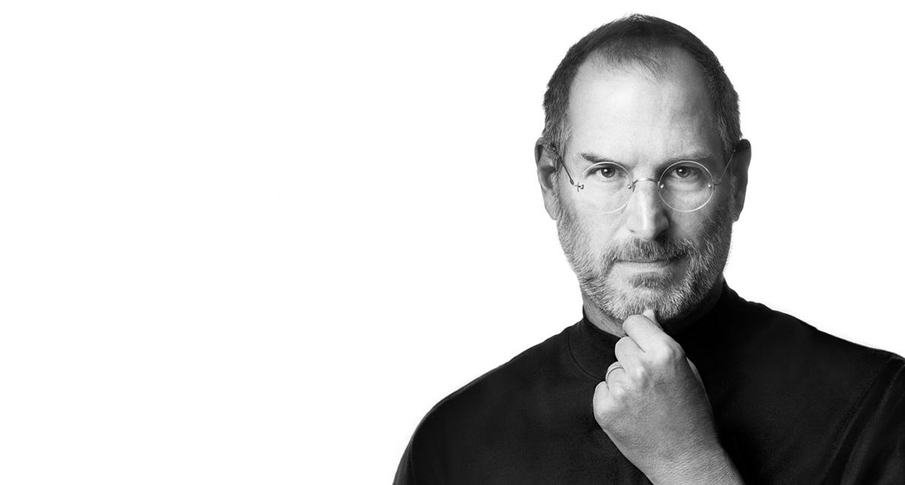

Steve Jobs
Steve Jobs was one of the most influential entrepreneurs in the field of IT

Photo of Steve Jobs
A timeline of Steve Jobs
- Feb 1955 - Steve was born in San Francisco, the son of Abdulfattah Jandali and Joanne Schieble. He is quickly adopted by Paul and Clara Jobs
- 1960 - The Jobs family moves from San Francisco to Mountain View, a suburban town in Santa Clara county, more commonly known as Silicon Valley
- 1969 - Steve Jobs meets Steve Wozniak, 5 years older, through a mutual friend. Woz and Steve share a love of electronics, Bob Dylan, and pranks
- 1972 - Steve and Woz build and illegally sell 'blue boxes' that allow to make phone calls for free
- Mar 1976 - Woz and Steve show the early Apple I board at the Homebrew Computer Club
- Apr 1976 - Apple Computer Inc. is incorporated by Steve Jobs, Steve Wozniak and Ron Wayne
- 1978 - The Apple II becomes the first mass-market personal computer, with impressive sales around the US. Apple becomes a symbol of the personal computing revolution
- Sep 1985 - Steve Jobs resigns from Apple and starts NeXT with five other refugees from Apple. Apple announces it will sue NeXT
- Jan 1992 - NeXT licenses its operating system, NeXTSTEP, to run on x86 machines
- Dec 1996 - Apple, which was desperately looking for a modern operating system to buy, eventually buys NeXT for $400 million. Steve Jobs is named "informal adviser" to Apple CEO Gil Amelio
- July 1997 - Gil Amelio is ousted by the Apple Board of directors after a disastrous quarter. Steve Jobs is named interim CEO in his place and installs his NeXT executive team at the top of Apple
- Aug 2011 - Steve Jobs resigns as CEO of Apple, with the words 'I have always said if there ever came a day when I could no longer meet my duties and expectations as Apple's CEO, I would be the first to let you know. Unfortunately, that day has come.' Tim Cook becomes Apple CEO
- Oct 2011 - Steve Jobs dies at home, surrounded by his family
Your work is going to fill a large part of your life, and the only way to be truly satisfied is to do what you believe is great work. And the only way to do great work is to love what you do. If you haven't found it yet, keep looking. Don't settle. As with all matters of the heart, you'll know when you find it
Steve Jobs, CEO, Apple Inc.
If you want to know and read more about Steve Jobs, check out this Wikipedia entry